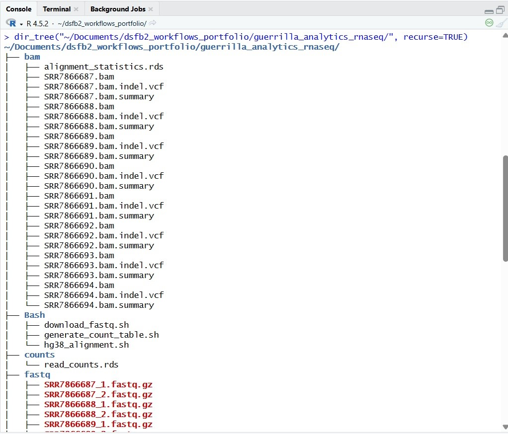
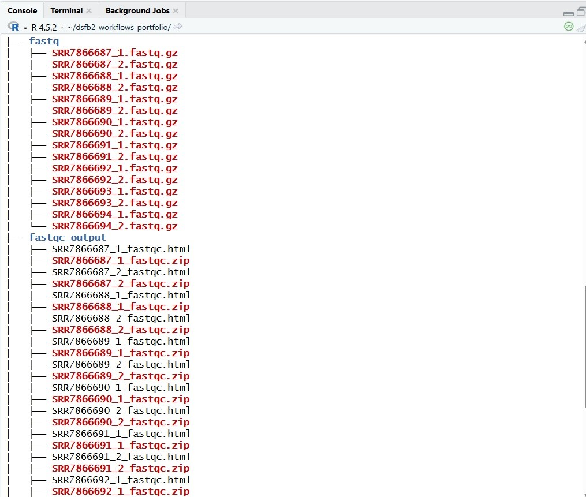
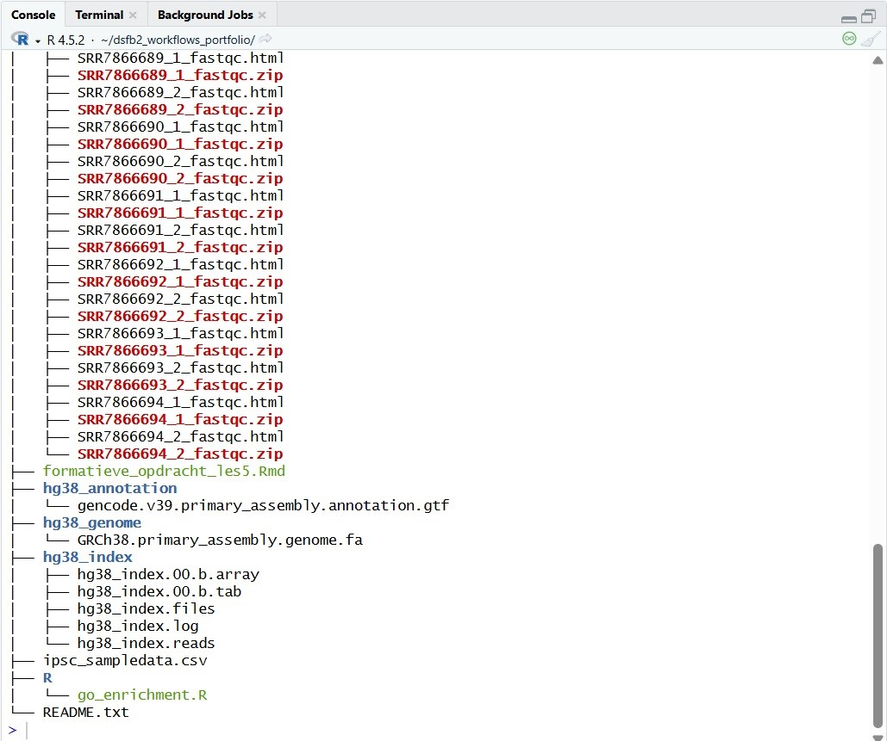
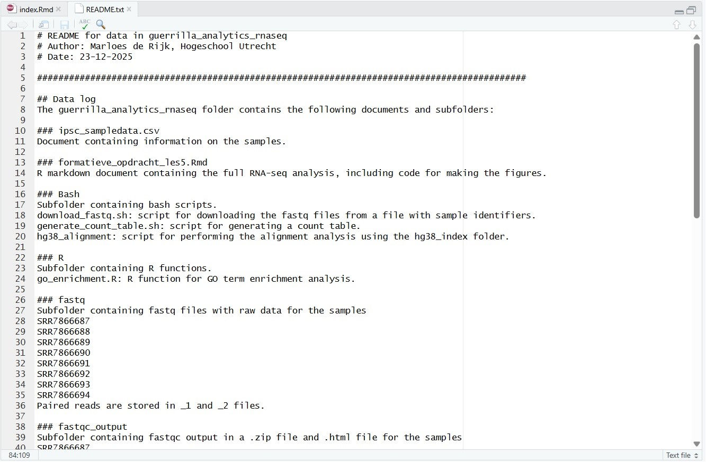
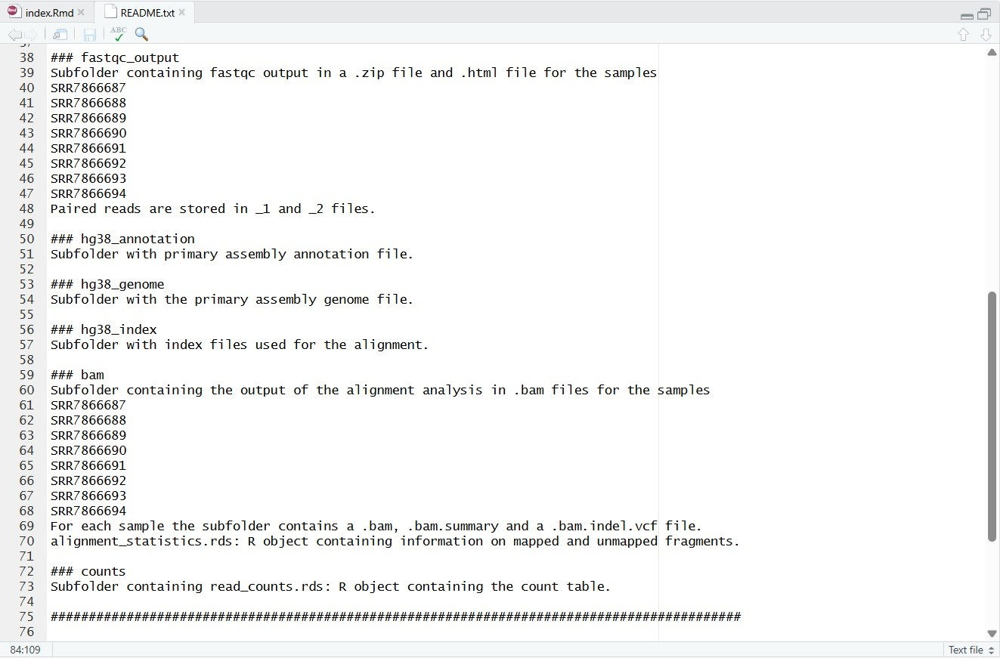
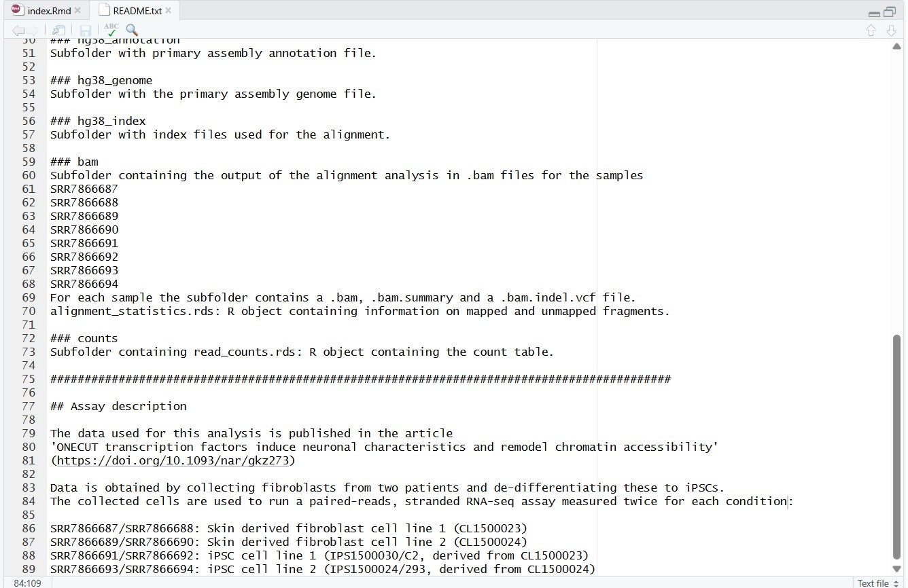

4 Guerrilla analytics RNA-seq
Het doel van de opdracht is om de bestanden van de RNA-sequencing formatieve opdracht uit de DAUR2 cursus op een overzichtelijke manier neer te zetten.In de onderstaande screenshots is de indeling van de mappen en de inhoud van het README bestand weergegeven.

Figuur 1: Weergave van de mapstructuur van guerrilla_analytics_rnaseq (1/3)

Figuur 2: Weergave van de mapstructuur van guerrilla_analytics_rnaseq (2/3)

Figuur 3: Weergave van de mapstructuur van guerrilla_analytics_rnaseq (3/3)

Figuur 4: Weergave van de README file voor guerrilla_analytics_rnaseq (1/3)

Figuur 5: Weergave van de README file voor guerrilla_analytics_rnaseq (2/3)

Figuur 6: Weergave van de README file voor guerrilla_analytics_rnaseq (3/3)